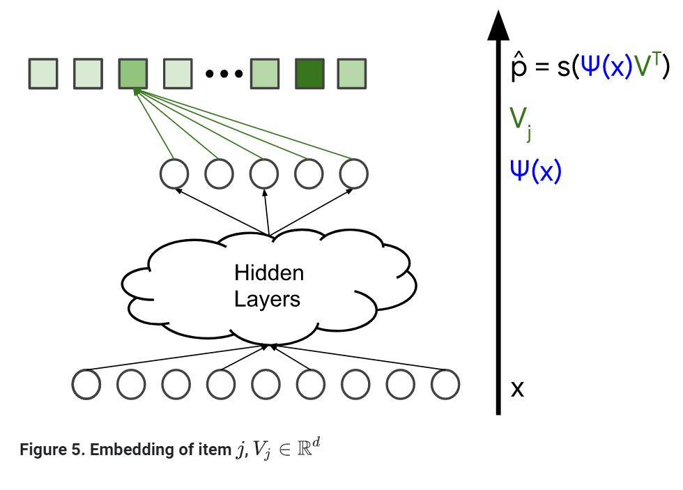

深度神经网络推荐模型
上一篇文章已向你展示了使用矩阵因子分解来学习embeddings。矩阵因子分解的局限性：
- 很难使用边缘特征(side feature，就是query id和item id之外的特征)。这个模型只能根据训练数据集中的用户或物品进行推荐。
- 推荐的相关性。在矩阵因子分解的实验中，模型会给每个人推荐流行的物品，特别是使用点积作为相似度量。但是模型应该最好是能捕捉用户的兴趣。
深度神经网络能很好的避免矩阵因子分解的这些局限性。深度神经网络能很轻松的合并用户特征和物品特征(因为神经网络输入层的灵活性)，这就能帮助发现用户的兴趣，进而提高推荐的相关性。
Softmax深度神经网络的推荐
一个可行的深度神经网络模型是softmax(softmax是一个函数，这个函数能在多类型分类模型中，预测每一个类型的可能性)
这个模型把推荐的问题当做一个多分类预测的问题：
- 输入是一个用户
- 输出是一个可能性的向量，这个向量的长度是企业内所有物品的数量，这个向量就表示每种物品的可能性，例如，点击或观看youtube视频的可能性。
输入
深度神经网络的输入能包含： - 稠密特征(例如，观看时间和自上次观看以来的时间)
- 稀疏特征(例如，观看历史和国家)
不像矩阵因子分解模型，这个模型你能增加像年龄、国家这样的边缘特征。我们把输入的向量定义为x
模型架构
模型的架构决定了模型的复杂性和可表达性。通过增加隐藏层和非线性的激活函数(例如Relu)，模型能捕捉数据中更加复杂的关系。但是增加参数的数量会使得模型更难训练而且使用模型的成本更高。我们把最后一个隐藏层的输出定义为
Softmax输出，预测分布的可能性
模型通过一个softmax层把最后一层的输出φ(x)映射为分布的可能性，其中
- h是softmax函数
- V(n*d)是softmax层的权重矩阵
softmax层把评分的向量y(有时也被称为logits)映射为分布的可能性。你知道吗？
softmax是取一个词语的诙谐表示，一个”硬”最大是把物品得分最高的y(i)赋值为可能性1，相反，这个”软”最大是为所有物品分配一个非0的可能性，物品拥有更高的分数就代表更高的可能性。如果这个分数放大，softmax函数把硬最大收敛为无穷大。损失函数
最后，我们定义个损失函数来比较以下两项： - p^，softmax层的输出(分布的可能性)
- p，真实值，表示这个用户和这个物品的交互（例如，youtube上面用户观看或点击的视频）。这能通过一个multi-hot分布(可能性的向量)来表示。
Softmax Embeddings
物品j的可能性通过如上公式计算得出，Z是一个标准化使用的常量，它不依赖于j。换句话说，log(p^j)一个物品的可能性的log值是两个d维向量的点击，这两个d维的向量也可以表示为用户和物品的embeddings - φ(x)∈R(D)是最后一个隐藏层的输出，我们把它省委query x的embedding
- V(j)∈R(d)是连接最后一个隐藏层到输出j的权重向量，我们把它称为物品j的embedding。
注意
因为log是一个增函数，拥有最高可能性p^(j)的物品j就是最大点积<φ(x),V(j)>的物品。因此，在这个embedding空间中，点积也可以解释为相似度量。
深度神经网络和矩阵因子分解
在softmax模型和矩阵因子分解模型中，系统为每一个item j都学习到一个embedding向量V(j)，矩阵因子分解模型中的物品embedding矩阵V∈R(n*d)在深度神经网络中是
softmax层的权重矩阵。
query embedding则是不同的。深度神经网络没有为每个query i学习一个embedding U(i)，而是学习了一个query特征x到embedding φ(x)∈R(d)的映射。因此可以认为深度神经网络模型是一个更加一般化的矩阵因子分解，这个模型把query替换为一个非线性的函数φ(.)。
你能使用物品的特征吗？
我们能在物品上应用相同的思想吗？就是说这个模型不为每个物品学习一个embedding，而是学习一个非线性函数，这个函数把物品特征映射为一个embedding？答案是有。我们使用一个双塔(two-tower)神经网络，它由两个神经网络组成
- 一个神经网络把query 特征映射为query embedding
- 一个神经网络把item特征映射为item embedding
模型的输出可以定义为query embedding和item embedding的点积。注意,这不再是一个softmax模型。这个模型为每一query和item对预测一个值，而不是为query预测一个可能性向量。
Softmax Training
上一节介绍了怎么在一个推荐系统的深度神经网络中使用softmax层。这节我们来仔细看看这个系统的训练数据。
训练数据
softmax训练数据由query特征x以及和用户交互的物品向量（表示为可能性分布p）。在下图中他们被标记为蓝色。这个模型中的变量是不同层的权重，他们在下图中被标记为橙色。这个模型能使用任何类型的随机梯度下降的方法训练。
negative sampling
因为损失函数是比较两个可能性数组p,p^(x)∈R(n)（他们分别是真实值和模型的输出）。当n非常大的情况下，为一个query x计算梯度损失x的代价是非常高的。
我们当然可以建立一个系统只计算那些正向物品(positive item，在向量中处于活动的物品，跟用户有交互的物品)的梯度。但是，如果系统只计算positive物品，那么系统就会遭遇折叠的困境，什么是折叠的困境：
在上图中，我们假设不同的颜色代表不同种类的query和item。每个query(表示为方形)最可能和同种颜色的item(表示为圆形)交互。例如，我们假设分类就是youbute中不同的语言，一个特定的用户只会和这个特定语言的视频交互。
这个模型能学习到在同一个颜色中如何摆放相互之间有关系的query或item。(能正确捕捉到同一颜色内的相似性)，但是来自不同颜色的embedding可能最后被放入同一个embedding空间的区域中。这种现象被称为折叠，会导致假的推荐：就是在一个query时刻，模型会错误的推荐一个其它组中的高分item。
反向例子(negative examples)就是和一个给定的query不相关的item。在模型训练时输入一些反向的例子能使模型学习到来自不同组的embedding会彼此互相分离开。
我们不是对所有的物品都计算梯度(这样代价太大)，也不是只对正向样本计算梯度(这会导致模型折叠)，你可以使用负向样本抽样(negative sampling)。更准确的说，我们只对下面的物品计算对应的梯度：
- 所有正面的item，(被标记为1的物品)
- 负面item的抽样(j in 1,…,n)
这里有不同的负面抽样策略 - 一致性抽样
- 你可以给有更高分数的φ(x).V(j)对应的物品j更大的可能性，直觉的认为，这些是在梯度中贡献更大的一组物品，这些物品通常被称为硬反面(hard negative)。
额外的资源:
为了更好的理解这个技术、架构和youtube中使用的模型，
查看Neural Networks for YouTube Recommendations
了解折叠的更多细节看
Xin et al., Folding: Why Good Models Sometimes Make Spurious Recommendations
矩阵因子分解 Vs Softmax
Softmax能避免矩阵因子分解中很多的局限性，但是也更难以训练和查询。下面表格总结了两种模型重要的区别
| 矩阵因子分解 | 深度神经网络Softmax | |
|---|---|---|
| 查询特征 | 不容易包含 | 能被包含 |
| 冷启动 | 不能方面处理训练集之外的query和物品。 一些启发式的方法可以使用(例如：对于一个新的query，可以取相似query embedding的均值) |
处理新query很简单 |
| 折叠 | 通过把未观察的权重放入WALS中轻易解决折叠的问题 | 证明会发生折叠，可以使用反面抽样或Gravity的技术 |
| 训练扩展 | 轻易扩展到大型组织(上亿级的物品甚至更多) 仅限输入是稀疏的矩阵 |
很难扩展到大型组织。也可以使用一些技术，如：哈希、反面抽样等 |
| 服务应用扩展 | U、V的embedding是固定的，可以预计算一组候选者并保存 | 物品embeding V是固定的。 query的embedding需要在查询时计算，使得模型服务应用的代价更高 |
总结
- 矩阵因子分解是大公司更好的选择，它能轻易的扩展，查询代价低，不会产生折叠。
- 深度神经网络能更好捕捉兴趣，但是更难训练和query代价高。如果是为了评分，那么优先使用深度神经网络而不是矩阵因子分解。因为深度神经网络模型能使用更多的特征来更好的捕捉相关性。同时，通常深度神经网络模型产生的折叠是可以被接受的，因为你更关注那些被认为是预先过滤的一组相关的候选者的排名。
本文翻译自谷歌开发者使用深度神经网络推荐

...
...
This is copyright.